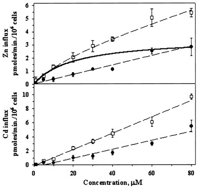

| METALS IN MEDICINE AND THE ENVIRONMENT | |||
| Metals | Itai-Itai Disease: A Puzzling Example of Metal Toxicity | ||
|
What is Itai-itai Disease? Itai-itai disease was the first documented occurrence of mass cadmium poisoning in the world. It occurred in 1950 in Toyama Prefecture in Japan. However, the first time the disease was reported here was in 1912. Toyama Prefecture was at the time the leading industrial prefecture on the Japan sea coast. Itai-itai disease literally translates to “ouch-ouch” disease, named for the painful screams of its victims. Cadmium Poisoning Cadmium poisoning is a serious example of the toxicity of some metals in the body. In the body cadmium has no constructive function, meaning it serves no biological function except as a toxin. Cadmium is highly toxic even at low doses. Some of the effects of acute cadmium exposure are flu-like symptoms, fever, chills, muscle aches. These flu-like symptoms are referred to as “The Cadmium Blues”. More serious exposure to cadmium has much more detrimental effects. Any significant amount of cadmium taken up by the body immediately poisons the liver and kidneys. Proximal Renal Tubular Dysfunction occurs when significant amounts of cadmium are ingested, meaning the kidneys lose their ability to remove acid from the blood. A side effect of this is Gout, most likely contributing to much of the pain endured by victims of Itai-itai. The kidney damage caused by cadmium is irreversible. Serious damage is also inflicted upon the bones in a victim of Itai-itai. Cadmium poisoning leads to osteomalacia (softening of the bones) and osteoporosis (loss of bone mass and weakness). In extreme cases of this a person with Itai-itai can sustain bone fractures from their body weight alone. Cadmium is also a carcinogen. Why Did Itai-itai Disease Even Occur? Mining was prevalent in the Toyama Prefecture of Japan starting around the year 710. After WWI, new mining technology arriving from Europe made the Kamioka Mines in Toyama among the most productive in the world. Starting all the way back in 1910 cadmium was being released in significant quantities into the Jinzu River in Toyama. This was a major problem because the cadmium in the water killed all the fish, not to mention it was the major source for irrigation for the surrounding paddy fields, as well as drinking water. In 1912 the first documented case of the disease emerged. This was only two years after the cadmium had shown up in large quantities in the river. This means that there was a lot of cadmium present. Finally to the Point – Pregnancy as it Relates to Cadmium Poisoning It was reported that over 200 elderly women living in the Jinzu Valley in the 1940s being mothers of multiple children were disabled by the disease. This was on top of a reported 65 deaths of women thanks to Itai-itai. So what was going on? Why were pregnant women at more of a risk for cadmium poisoning? Metal Mimicry is the Answer The key actually lies in a close relative of cadmium, namely in zinc. Zinc and cadmium share an uptake pathway in the body. So, cadmium which is very similar to zinc in reactivity, is taken up by the zinc uptake protein in the body unknowingly. And it seems like it’s taken up in large quantities, very quickly. Tests on zinc uptake in yeast cells show that the zinc uptake protein ZNT1 followed normal Michaelis-Menten kinetics when importing zinc. However, cadmium did not. The point at which the importing of cadmium started to reach Vmax was not found. This means that the saturation point of the receptors that were shuttling cadmium into the cell was not in the same range as that for zinc, they were much higher. So, it seems like the process of cadmium uptake is much quicker than that of zinc. Figure 1. The Michaelis-Menten Kinetics of the ZNT1 protein in Yeast when Importing Zinc and Cadmium  From: Pence, N. S. et al. Proc. Natl. Acad. Sci. USA 97, 4956-60 (2000). What Does This Have to do with Pregnant Women? A normal adult woman needs 7.0 mg/day. However, a pregnant woman needs even more than this, and its believed that the body accounts for this by increased uptake from the gut. On top of that, women who are breast feeding need even more, closer to 9.0 to 13.0 mg/day. In the first four months of breast feeding, the milk contains 2 mg of zinc and a woman needs and extra 6 mg/day of zinc to make up for this. Thinking About the Normal Diet of a Woman in this Region During the mid-1900s in a prefecture in Japan it would be pretty safe to assume these women ate a lot of rice. But, this turns out to be a very bad idea. The rice is mainly irrigated by water from the Jinzu River which we know has been pumped full of cadmium. So, now we have rice that is normally depleted of zinc and saturated with cadmium. This is not the best thing for a pregnant woman to be eating when their bodies are trying to uptake extra zinc. But, how would they know? Or better yet what could replace a staple food like rice if it were cut out of the diet? The Big Picture Now we know that :
It’s not hard to see how so much cadmium got into the bodies of these women. With cadmium and zinc sharing an uptake pathway, the body is fooled into taking up loads of cadmium that it believes is zinc. On top of that these women probably weren’t getting enough zinc, and a zinc deficiency can lead to a 15 fold retention rate for cadmium. So, at first glance it would seem there isn’t a lot of connection between pregnancy and cadmium poisoning. But, as you can see that’s not the case. References Wikipedia. (2007). Itai-itai Disease. Retrieved September 24, 2007. Energy Citations Database. (2001). Document #5175630. Retrieved September 20, 2007. VEGSOC. Zinc Information Sheet. Retrieved September 20, 2007. Kanazawa-Med. Itai-itai Disease. Retrieved September 23, 2007. Wikipedia. (2007). Cadmium poisoning. Retrieved September 24, 2007. N. S. Pence, P. B. Larsen, S. D. Ebbs, D. L. D. Letham, M. M. Lasat, D. F. Garvin, D. Eide, L. V. Kochian. (2000). "The molecular physiology of heavy metal transport in the Zn/Cd hyperaccumulator Thlaspi caerulescens" Plant Biology, 97(9), 4956-60. Author: Jarrod Rasnake |
|||
| Topics | |||
|
|||